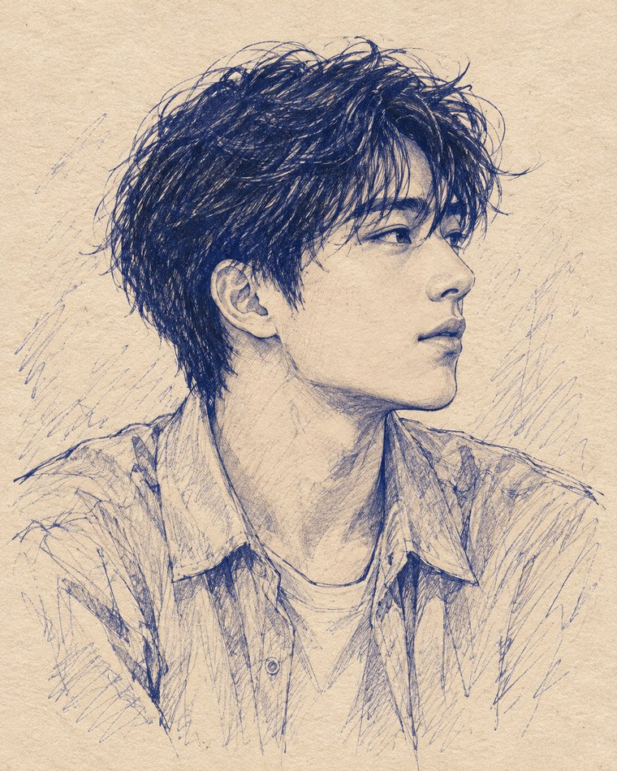

Ryu
Tokyo · The observer
Living in Tokyo, Ryu has learned to keep his world in order, even when his heart tells a different story. Beneath his wit and quiet longing lies a hope for something real. Then someone walks into his life, a stranger with an unforgettable smile and a presence that lingers long after goodbye, leaving Ryu to wonder if some encounters are written by chance, or something far more mysterious.
Meet the narrator ↗